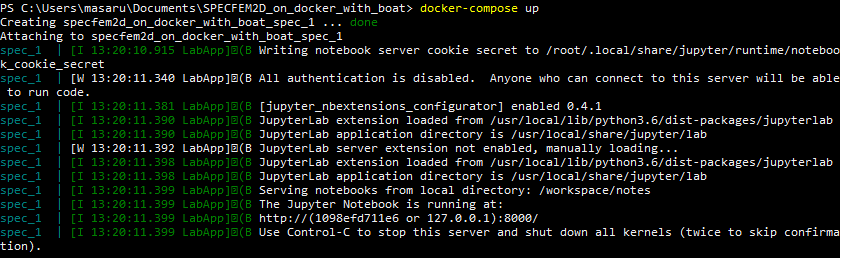
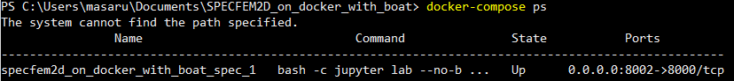

Tutorial¶
In this page, an example of entire calculation with this library is indicated with a small geometry.
1. Check if the docker daemon is running.¶
On linux, it is ok if the command docker ps (in the terminal) indicates a list of docker images. On OSX and Windows, the state of the daemon can be seen on the menu bar as this image:
2. Start docker container¶
Initialization of the colculation environment for use of this library is quite simple.At first, please open the terminal or Power shell (windows) and navigate it to the directory of this library by running the command
cd ~/path/to/this/library/
E.g. if you placed the directory of this library (i.e. SPECFEM2D_on_docker_with_boat) in your Documents directory, this cd command should be as
cd ~/Documents/SPECFEM2D_on_docker_with_boat
Then start the docker container (the environment packaged with docker) by the command
docker-compose up
If it is the first time to run this command on your computer, it may take about 10 minutes because docker is downloading and compiling all necessary libraries and codes automatically. From the next time, this waiting time will not be required and docker will start the docker container in few seconds. After finishing it, you may see the indication like below:
3. Open jupyter lab on your internet browser (chrome etc.)¶
As indicated in the terminal, jupyter lab is currently running in the docker environment with an accessible ip address:port number 127.0.0.1:8000. It should be noted that this port number is only about the inside of docker enviroment and now your are outside of there. The port connection between inside and outside of docker environment is configured with dokcer-compose.yml file and you can verify by reading this file or by the command
docker-compose ps
which will indicates as
you may find that the port 8000 inside of docker is connected to 8002 of its outside.So in this situation, you may open the jupyter lab environment by accessing
127.0.0.1:8002
with any kind of the web browser.
4. Explanation about Jupyter lab¶
Openning 127.0.0.1:8002 in a web browser shows a jupyter lab’s main screen as indicated below,
A file browser is on the left side. At the initial time, you may find only one single example directory on the list. You can add any files or directory from the buttons above or by drag and drop directly on this browser.Some buttons on the right side are for creating a new jupyter notebook file or a text file, or starting python console.A terminal window may be openned from the button below, which is directly opened form the docker environment thus it is useful to e.g. installing additional libraries or erasing files etc.
Example_small directory includes the files for making a small simulation as an example.
After entering this folder by double clicking in the file browser